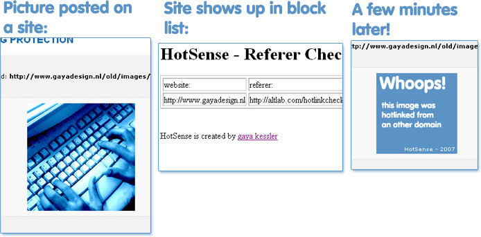

HotSense
“Stops the hotlinking
of your images with
a build-in delay.”
What is it?
HotSense is a script especially made for webmasters who own a website with a lot of images. Are you tired of all the hotlinking? Are people using your bandwith without you knowing?Then HotSense is the solution for you!
It combines a .htaccess file with a php file to create a sneaky way to stop hotlinking. It even has a build-in delay! So when people try to hotlink your image, they'll see a different one in a desired delay! This will fool hotlinkers for some time, and then the images will be replaced, isn't that nice?

What HotSense offers:
- Stops hotlinking
- A list of blocked websites.
- A list of time left for a website.
- Hotlinking the image after a set delay.
- Easy to configure.
What HotSense requires:
- Host with PHP support.
- Host with MySQL support.
- Only 1 table in your database.